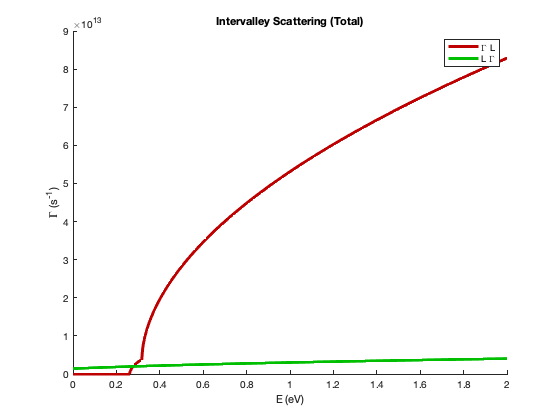
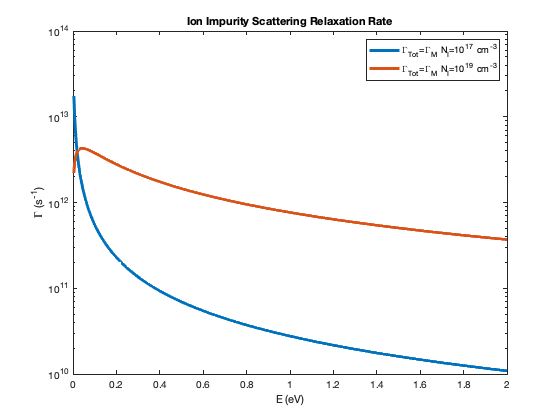

close all;
clc;
hbar=6.582119*10^-16;
hbarJ=1.0545718*10^-34;
kb=8.6173303*10^-5;
kbJ=1.38064852*10^-23;
T=300;
ep0=8.854187817*10^-12;
e=1.6021766208*10^-19;
m0=9.10938356*10^-31;
Ec=0;
effm = [0.067 0.22 0.58]*m0;
rho = 5.36/1000*(100^3);
vs = 5.24*10^5/100;
epr0 = 12.90;
eprInf = 10.92;
nE=500;
E=linspace(0,2,nE);
Dac = [7.01 9.2 9.0];
ScattAcousticAbs(1:nE,1:length(Dac))=0;
ScattAcousticEmi(1:nE,1:length(Dac))=0;
ScattAcousticTot(1:nE,1:length(Dac))=0;
E0 = 0.03536;
w0 = E0/hbar;
N0=(exp(E0/(kb*T))-1)^(-1);
ScattPolarOpAbs(1:nE)=0;
ScattPolarOpEmi(1:nE)=0;
ScattPolarOpTot(1:nE)=0;
Div = [10 10 10 5.0 7.0]*10^8*100;
Ein = [0.0278 0.0299 0.0290 0.0293 0.0299];
deltaE = [ 0.29 0.48 0 0.19 0; ...
-0.29 -0.48 -0 -0.19 -0];
effmIV = [effm(2) effm(3) effm(2) effm(3) effm(3); ...
effm(1) effm(1) effm(2) effm(2) effm(3)];
ValleyN = [4 3 4 3 3; ...
1 1 4 4 3];
ScattIntervalleyAbs(1:nE,1:length(Div)) = 0;
ScattIntervalleyEmi(1:nE,1:length(Div)) = 0;
ScattIntervalleyTot(1:nE,1:length(Div)) = 0;
GammaE(1:nE)=0;
GammaMIon(1:nE,1:length(Div))=0;
GammaMPop(1:nE)=0;
GammaEPop(1:nE)=0;
NI = [10^17 10^19]*(100^3);
Z = 1;
k(1:nE) = 0;
ScattIonImpurity(1:nE,length(NI)) = 0;
for i=1:nE
for m=1:length(effm)
g3dAcoustic = sqrt(2)/(pi^2*hbar^3)*effm(m)^(3/2)*sqrt(E(i)-Ec);
ScattAcousticAbs(i,m) = 2*pi/(hbarJ*hbar)^(1/2)*Dac(m)^2*kb*T/(2*rho*vs^2)*g3dAcoustic;
ScattAcousticEmi(i,m) = 2*pi/(hbarJ*hbar)^(1/2)*Dac(m)^2*kb*T/(2*rho*vs^2)*g3dAcoustic;
ScattAcousticTot(i,m) = ScattAcousticAbs(i,m) + ScattAcousticEmi(i,m);
end
PopFactor=sqrt(hbar/hbarJ)*e^2*w0/(8*pi)*sqrt(2*effm(1)/hbarJ^2)*(1/(ep0*eprInf)-1/(ep0*epr0))*1/sqrt(E(i));
ScattPolarOpAbs(i) = PopFactor*N0*log(abs((1+sqrt(1+E0/E(i)))/(-1+sqrt(1+E0/E(i)))));
ScattPolarOpEmi(i) = PopFactor*(N0+1)*log(abs((1+sqrt(1-E0/E(i)))/(1-sqrt(1-E0/E(i)))))*heaviside(E(i)-E0);
ScattPolarOpTot(i) = ScattPolarOpAbs(i) + ScattPolarOpEmi(i);
for n=1:2
for m=1:length(Div)
Niv=(exp(Ein(m)/(kb*T))-1)^(-1);
g3dIntervalleyAbs = sqrt(2)/(pi^2*hbar^2*(hbarJ*hbar)^(1/2))*effmIV(n,m)^(3/2)*sqrt(E(i)-deltaE(n,m)+Ein(m));
g3dIntervalleyEmi = sqrt(2)/(pi^2*hbar^2*(hbarJ*hbar)^(1/2))*effmIV(n,m)^(3/2)*sqrt(E(i)-deltaE(n,m)-Ein(m));
ScattIntervalleyAbs(i,n,m) = pi*Div(m)^2/(2*rho*Ein(m)/hbar)*ValleyN(n,m)*Niv*g3dIntervalleyAbs;
ScattIntervalleyEmi(i,n,m) = pi*Div(m)^2/(2*rho*Ein(m)/hbar)*ValleyN(n,m)*(Niv+1)*g3dIntervalleyEmi;
ScattIntervalleyTot(i,n,m) = ScattIntervalleyAbs(i,n,m)+ScattIntervalleyEmi(i,n,m);
end
end
for m=1:length(NI)
Ld=sqrt(ep0*epr0*kbJ*T/(e^2*NI(m)));
k(i)= sqrt(2*effm(1)*E(i)/(hbar*hbarJ));
ScattIonImpurity(i,m) = (NI(m)*Z^2*e^4*effm(1)*Ld^4)/(hbarJ^3*pi*ep0^2*epr0^2)*(k(i)/(4*k(i)^2*Ld^2+1));
gamma=sqrt(8*effm(1)*E(i)*Ld^2/(hbar*hbarJ));
GammaMIon(i,m)=(hbar/hbarJ)^(3/2)*(NI(m)*e^4)/(16*sqrt(2*effm(1))*pi*epr0^2*ep0^2)*(log(1+gamma^2)-gamma^2/(1+gamma^2))*E(i)^(-3/2);
end
GammaMPop(i)=(e^2*w0*(epr0/eprInf-1))/(4*pi*epr0*ep0*sqrt(hbarJ/hbar)*hbarJ*sqrt(2*E(i)/effm(1)))* ...
(N0*sqrt(1+E0/E(i))+(N0+1)*sqrt(1-E0/E(i))-E0*N0/E(i)*asinh(sqrt(E(i)/E0))+E0*(N0+1)/E(i)*asinh(sqrt(E(i)/E0-1)));
GammaEPop(i)=(hbar/hbarJ)^(3/2)*(e^2*w0^2*(epr0/eprInf-1))/(2*pi*epr0*ep0)*(N0+1)*asinh(sqrt(E(i)/E0-1))/(E(i)*(sqrt(2*E(i)/effm(1))));
end
figure(1)
hold on
plot(E,ScattAcousticAbs(:,1),'Linewidth', 3,'Color', [1 0 0])
plot(E,ScattAcousticEmi(:,1), '--','Linewidth', 3,'Color', [0.75 0 0])
plot(E,ScattAcousticTot(:,1),'Linewidth', 3,'Color', [0.5 0 0])
plot(E,ScattAcousticAbs(:,2),'Linewidth', 3,'Color', [0 1 1])
plot(E,ScattAcousticEmi(:,2), '--','Linewidth', 3,'Color', [0 0.75 0.75])
plot(E,ScattAcousticTot(:,2),'Linewidth', 3,'Color', [0 0.5 0.5])
plot(E,ScattAcousticAbs(:,3),'Linewidth', 3,'Color', [0 0 1])
plot(E,ScattAcousticEmi(:,3), '--','Linewidth', 3,'Color', [0 0 0.75])
plot(E,ScattAcousticTot(:,3),'Linewidth', 3,'Color', [0 0 0.5])
title('Acoustic Phonon Scattering')
legend('\Gamma (Abs)','\Gamma (Emi)','\Gamma (Tot)', ...
'L (Abs)','L (Emi)','L (Tot)', ...
'X (Abs)','X (Emi)','X (Tot)')
xlabel('E (eV)')
ylabel('\Gamma (s^-^1)')
hold off
figure(2)
hold on
plot(E,ScattIntervalleyAbs(:,1,1),'Linewidth', 3,'Color', [0.75 0 0])
plot(E,ScattIntervalleyAbs(:,1,2),'Linewidth', 3,'Color', [0.75 0.5 0])
plot(E,ScattIntervalleyAbs(:,1,3),'Linewidth', 3,'Color', [0 0.75 0])
plot(E,ScattIntervalleyAbs(:,1,4),'Linewidth', 3,'Color', [0 0.75 0.75])
plot(E,ScattIntervalleyAbs(:,1,5),'Linewidth', 3,'Color', [0 0 0.75])
plot(E,ScattIntervalleyAbs(:,2,1),'Linewidth', 3,'Color', [0.5 0 0])
plot(E,ScattIntervalleyAbs(:,2,2),'Linewidth', 3,'Color', [0.5 0.5 0])
plot(E,ScattIntervalleyAbs(:,2,3),'Linewidth', 3,'Color', [0 0.5 0])
plot(E,ScattIntervalleyAbs(:,2,4),'Linewidth', 3,'Color', [0 0.5 0.5])
plot(E,ScattIntervalleyAbs(:,2,5),'Linewidth', 3,'Color', [0 0 0.5])
title('Intervalley Scattering (Absorption)')
legend('\Gamma L (Abs)','\Gamma X (Abs)','L L (Abs)','L X (Abs)','X X (Abs)')
xlabel('E (eV)')
ylabel('\Gamma (s^{-1})')
hold off
figure(3)
hold on
plot(E,ScattIntervalleyEmi(:,1,1),'Linewidth', 3,'Color', [0.75 0 0])
plot(E,ScattIntervalleyEmi(:,1,2),'Linewidth', 3,'Color', [0.75 0.5 0])
plot(E,ScattIntervalleyEmi(:,1,3),'Linewidth', 3,'Color', [0 0.75 0])
plot(E,ScattIntervalleyEmi(:,1,4),'Linewidth', 3,'Color', [0 0.75 0.75])
plot(E,ScattIntervalleyEmi(:,1,5),'Linewidth', 3,'Color', [0 0 0.75])
plot(E,ScattIntervalleyEmi(:,2,1),'Linewidth', 3,'Color', [0.5 0 0])
plot(E,ScattIntervalleyEmi(:,2,2),'Linewidth', 3,'Color', [0.5 0.5 0])
plot(E,ScattIntervalleyEmi(:,2,3),'Linewidth', 3,'Color', [0 0.5 0])
plot(E,ScattIntervalleyEmi(:,2,4),'Linewidth', 3,'Color', [0 0.5 0.5])
plot(E,ScattIntervalleyEmi(:,2,5),'Linewidth', 3,'Color', [0 0 0.5])
title('Intervalley Scattering (Emission)')
legend('\Gamma L (Emi)','\Gamma X (Emi)','L L (Emi)','L X (Emi)','X X (Emi)', ...
'L \Gamma (Emi)','X \Gamma (Emi)','L L (Emi)','X L (Emi)','X X (Emi)')
xlabel('E (eV)')
ylabel('\Gamma (s^{-1})')
hold off
figure(4)
hold on
plot(E,ScattIntervalleyTot(:,1,1),'Linewidth', 3,'Color', [0.75 0 0])
plot(E,ScattIntervalleyTot(:,1,2),'Linewidth', 3,'Color', [0.75 0.75 0])
plot(E,ScattIntervalleyTot(:,1,3),'Linewidth', 3,'Color', [0 0.75 0])
plot(E,ScattIntervalleyTot(:,1,4),'Linewidth', 3,'Color', [0 0.75 0.75])
plot(E,ScattIntervalleyTot(:,1,5),'Linewidth', 3,'Color', [0 0 0.75])
plot(E,ScattIntervalleyTot(:,2,1),'Linewidth', 3,'Color', [0.5 0 0])
plot(E,ScattIntervalleyTot(:,2,2),'Linewidth', 3,'Color', [0.5 0.5 0])
plot(E,ScattIntervalleyTot(:,2,3),'Linewidth', 3,'Color', [0 0.5 0])
plot(E,ScattIntervalleyTot(:,2,4),'Linewidth', 3,'Color', [0 0.5 0.5])
plot(E,ScattIntervalleyTot(:,2,5),'Linewidth', 3,'Color', [0 0 0.5])
title('Intervalley Scattering (Total)')
legend('\Gamma L','\Gamma X','L L','L X','X X', ...
'L \Gamma','X \Gamma','L L','X L','X X')
xlabel('E (eV)')
ylabel('\Gamma (s^{-1})')
hold off
figure(5)
hold on
plot(E,ScattPolarOpAbs,'Linewidth', 3)
plot(E,ScattPolarOpEmi,'Linewidth', 3)
plot(E,ScattPolarOpTot,'Linewidth', 3)
title('Polar Optical Phonon Scattering')
legend('Abs','Emi','Tot')
xlabel('E (eV)')
ylabel('\Gamma (s^-^1)')
hold off
figure(6)
hold on
plot(E,ScattIntervalleyTot(:,1,1),'Linewidth', 3,'Color', [0.75 0 0])
plot(E,ScattIntervalleyTot(:,2,1),'Linewidth', 3,'Color', [0 0.75 0])
title('Intervalley Scattering (Total)')
legend('\Gamma L', 'L \Gamma')
xlabel('E (eV)')
ylabel('\Gamma (s^{-1})')
hold off
figure(7)
hold on
plot(E,ScattIntervalleyTot(:,1,2),'Linewidth', 3,'Color', [0.75 0 0])
plot(E,ScattIntervalleyTot(:,2,2),'Linewidth', 3,'Color', [0 0.75 0])
title('Intervalley Scattering (Total)')
legend('\Gamma X', 'X \Gamma')
xlabel('E (eV)')
ylabel('\Gamma (s^{-1})')
hold off
figure(8)
hold on
plot(E,ScattIntervalleyTot(:,1,3),'Linewidth', 3,'Color', [0.75 0 0])
plot(E,ScattIntervalleyTot(:,2,3),'Linewidth', 3,'Color', [0 0.75 0])
title('Intervalley Scattering (Total)')
legend('L L', 'L L')
xlabel('E (eV)')
ylabel('\Gamma (s^{-1})')
hold off
figure(9)
hold on
plot(E,ScattIntervalleyTot(:,1,4),'Linewidth', 3,'Color', [0.75 0 0])
plot(E,ScattIntervalleyTot(:,2,4),'Linewidth', 3,'Color', [0 0.75 0])
title('Intervalley Scattering (Total)')
legend('L X', 'X L')
xlabel('E (eV)')
ylabel('\Gamma (s^{-1})')
hold off
figure(10)
hold on
plot(E,ScattIntervalleyTot(:,1,5),'Linewidth', 3,'Color', [0.75 0 0])
plot(E,ScattIntervalleyTot(:,2,5),'Linewidth', 3,'Color', [0 0.75 0])
title('Intervalley Scattering (Total)')
legend('X X', 'X X')
xlabel('E (eV)')
ylabel('\Gamma (s^{-1})')
hold off
figure(11)
hold on
plot(E,ScattIonImpurity(:,1),'Linewidth', 3)
plot(E,ScattIonImpurity(:,2),'Linewidth', 3)
title('Ionized Impurity Scattering')
legend('N_I=10^{17} cm^{-3}','N_I=10^{19} cm^{-3}')
xlabel('E (eV)')
ylabel('\Gamma (s^-^1)')
hold off
figure(12)
hold on
plot(E,ScattIonImpurity(:,1),'Linewidth', 3)
plot(E,ScattIonImpurity(:,2),'Linewidth', 3)
title('Ionized Impurity Scattering')
legend('N_I=10^{17} cm^{-3}','N_I=10^{19} cm^{-3}')
xlabel('E (eV)')
ylabel('\Gamma (s^-^1)')
hold off
figure(13)
semilogy(E,GammaMIon(:,1),'Linewidth', 3)
hold on
semilogy(E,GammaMIon(:,2),'Linewidth', 3)
title('Ion Impurity Scattering Relaxation Rate')
legend('\Gamma_{Tot}=\Gamma_M N_I=10^{17} cm^{-3}','\Gamma_{Tot}=\Gamma_M N_I=10^{19} cm^{-3}')
xlabel('E (eV)')
ylabel('\Gamma (s^-^1)')
hold off
figure(14)
hold on
semilogy(E,GammaMPop,'Linewidth', 3)
semilogy(E,GammaEPop,'Linewidth', 3)
title('Polar Optical Phonon Relaxation Rate')
legend('\Gamma_M','\Gamma_E','\Gamma_{Tot}')
xlabel('E (eV)')
ylabel('\Gamma (s^-^1)')
hold off
Warning: Imaginary parts of complex X and/or Y arguments ignored
Warning: Imaginary parts of complex X and/or Y arguments ignored
Warning: Imaginary parts of complex X and/or Y arguments ignored
Warning: Imaginary parts of complex X and/or Y arguments ignored
Warning: Imaginary parts of complex X and/or Y arguments ignored
Warning: Imaginary parts of complex X and/or Y arguments ignored
Warning: Imaginary parts of complex X and/or Y arguments ignored
Warning: Imaginary parts of complex X and/or Y arguments ignored
Warning: Imaginary parts of complex X and/or Y arguments ignored
Warning: Imaginary parts of complex X and/or Y arguments ignored
Warning: Imaginary parts of complex X and/or Y arguments ignored
Warning: Imaginary parts of complex X and/or Y arguments ignored
Warning: Imaginary parts of complex X and/or Y arguments ignored
Warning: Imaginary parts of complex X and/or Y arguments ignored
Warning: Imaginary parts of complex X and/or Y arguments ignored
Warning: Imaginary parts of complex X and/or Y arguments ignored
Warning: Imaginary parts of complex X and/or Y arguments ignored
Warning: Imaginary parts of complex X and/or Y arguments ignored
Warning: Imaginary parts of complex X and/or Y arguments ignored
Warning: Imaginary parts of complex X and/or Y arguments ignored
Warning: Imaginary parts of complex X and/or Y arguments ignored
Warning: Imaginary parts of complex X and/or Y arguments ignored
Warning: Imaginary parts of complex X and/or Y arguments ignored
Warning: Imaginary parts of complex X and/or Y arguments ignored
Warning: Imaginary parts of complex X and/or Y arguments ignored
Warning: Imaginary parts of complex X and/or Y arguments ignored
Warning: Ignoring extra legend entries.


